ST34 ST-34: Starter Deck 34 PURPLE Charlotte Katakuri
English One Piece Card Game deck ST-34 · card list, every variant, and PSA 10 chase cards
Card catalog: the official Bandai card list.ST-34: Starter Deck 34 PURPLE Charlotte Katakuri (ST34, ST-34) is an English One Piece Card Game deck with an English release date of July 31, 2026 and 15 cards in its full card list, counting each parallel, manga and SP version separately. Every card is in the full card list below.
Jump to: Full card list · Set facts · FAQ
Full card list
| No. | Name | Rarity | Version | Product | Color | Type | Cost/Life | Power |
|---|---|---|---|---|---|---|---|---|
| EB03-032 | 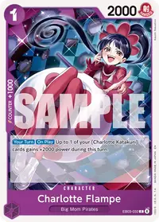 Charlotte Flampe | C | Reprint | ST34 | Purple | Character | 1 | 2000 |
| EB03-035 | 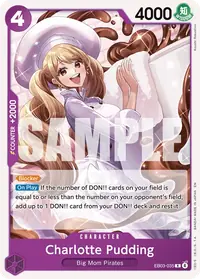 Charlotte Pudding | R | Normal | ST34 | Purple | Character | 4 | 4000 |
| OP11-062 | 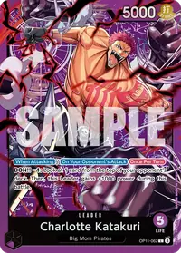 Charlotte Katakuri | L | Normal | ST34 | Purple | Leader | 5 | 5000 |
| OP11-065 | 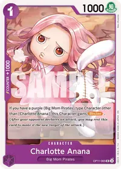 Charlotte Anana | UC | Reprint | ST34 | Purple | Character | 1 | 1000 |
| OP11-066 | 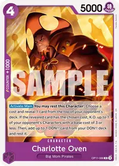 Charlotte Oven | R | Normal | ST34 | Purple | Character | 4 | 5000 |
| OP11-068 | 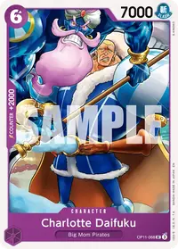 Charlotte Daifuku | UC | Reprint | ST34 | Purple | Character | 6 | 7000 |
| OP11-071 | 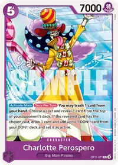 Charlotte Perospero | R | Normal | ST34 | Purple | Character | 5 | 7000 |
| OP11-079 | 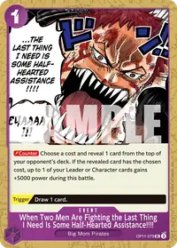 When Two Men Are Fighting the Last Thing I Need Is Some Half-Hearted Assistance!!!! | UC | Reprint | ST34 | Purple | Event | 1 | |
| OP11-081 | 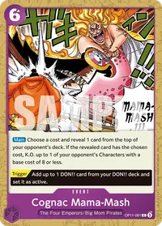 Cognac Mama-Mash | C | Reprint | ST34 | Purple | Event | 6 | |
| P-090 | 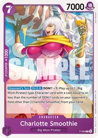 Charlotte Smoothie | PR | Normal | ST34 | Purple | Character | 7 | 7000 |
| ST34-001 | 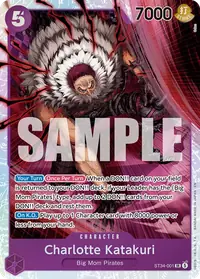 Charlotte Katakuri | SR | Normal | ST34 | Purple | Character | 5 | 7000 |
| ST34-002 | 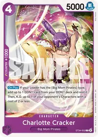 Charlotte Cracker | C | Normal | ST34 | Purple | Character | 4 | 5000 |
| ST34-003 | 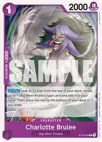 Charlotte Brulee | C | Normal | ST34 | Purple | Character | 1 | 2000 |
| ST34-004 | 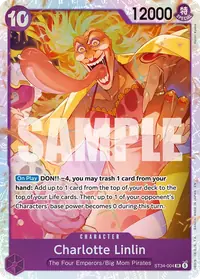 Charlotte Linlin | SR | Normal | ST34 | Purple | Character | 10 | 12000 |
| ST34-005 | 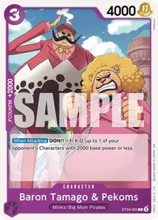 Baron Tamago & Pekoms | C | Normal | ST34 | Purple | Character | 3 | 4000 |
Card image: © Bandai / ONE PIECE CARD GAME official card list
Set facts
- Official product name
- STARTER DECK -PURPLE Charlotte Katakuri- [ST-34]
- Set code
- ST34 · ST-34
- English release
- 2026-07-31
- Japanese release
- 2026-07-11 (OPChase research notes)
- Official Bandai links
- Official card list
FAQ
When was ST34 ST-34: Starter Deck 34 PURPLE Charlotte Katakuri released in English?
ST-34: Starter Deck 34 PURPLE Charlotte Katakuri (ST-34) was released in English on 2026-07-31. The Japanese version came out on 2026-07-11.
How many cards are in ST34?
15 card numbers in our card database. Our database has 15 card printings in the English deck.